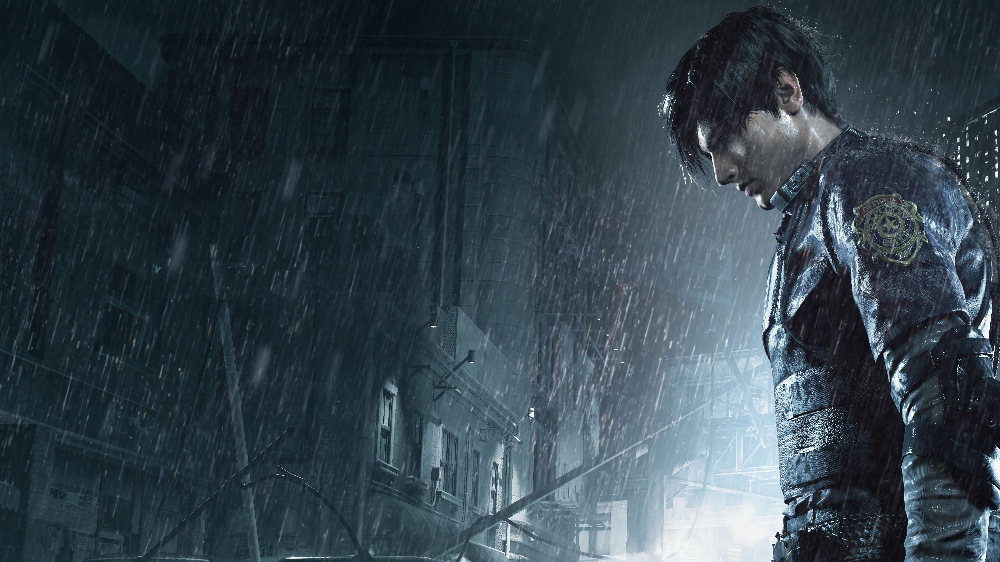

Resident Evil 4 Remake
La historia se sitúa seis años después de los eventos de Resident Evil 3: Nemesis y tiene como protagonista a Leon S. Kennedy. Ahora como agente del Servicio Secreto de los Estados Unidos, es enviado a una misión especial para rescatar a Ashley Graham, la hija del presidente de los Estados Unidos, que ha sido secuestrada por una extraña organización situada en España.

Puntuación: PEGI 18
Desarrollador: CAPCOM Co., Ltd.
Distribuidor: CAPCOM Co., Ltd.
Fecha de lanzamiento: 23 marzo 2023
Género: Un solo jugador, Acción, Aventura
Reseñas recientes en Steam: Extremadamente positivas (2358)
Todas las reseñas en Steam: Extremadamente positivas (84524)
Imagenes en el apartado de abajo:
Resident Evil 2 Remake
La historia comienza con Leon Scott Kennedy, un oficial de policía recientemente incorporado a la fuerza policial de Raccoon City coincidiendo su llegada a la ciudad con su primer día de trabajo y Claire Redfield, una joven que viajó allí para buscar a su hermano Chris Redfield quien desapareció en circunstancias desconocidas. A su llegada a Raccoon, ambos personajes tienen encuentros fortuitos con los que una vez fueron los ciudadanos de Raccoon City ahora convertidos en muertos vivientes al ser infectados por el virus, por lo que deciden ir a la estación de Policía de la ciudad para protegerse de las hordas que los persiguen.

Puntuación: PEGI 18
Desarrollador: CAPCOM Co., Ltd.
Distribuidor: CAPCOM Co., Ltd.
Fecha de lanzamiento: 24 enero 2019
Género: Un solo jugador, Acción
Reseñas recientes en Steam: Extremadamente positivas (1457)
Todas las reseñas en Steam: Extremadamente positivas (103435)
Imagenes en el apartado de abajo:



Grand Theft Auto V
Grand Theft Auto V para PC es un juego de acción y aventuras, el quinto de la serie GTA. Como ya es tradición en los juegos de esta serie, se obtienen puntos mediante la comisión de delitos. El juego alterna entre la narrativa visual y la jugabilidad en tercera y en primera persona. El jugador toma el papel de tres criminales tratando de huir de una determinada agencia del gobierno y cometiendo asaltos. No se elige un solo personaje para jugar, la narrativa del juego salta de un personaje a otro.

Puntuación: PEGI 18
Desarrollador: Rockstar North
Distribuidor: Rockstar Games
Fecha de lanzamiento: 13 abril 2015
Género: Un solo jugador, Acción, Aventura
Reseñas recientes en Steam: Muy positivas (19788)
Imagenes en el apartado de abajo: